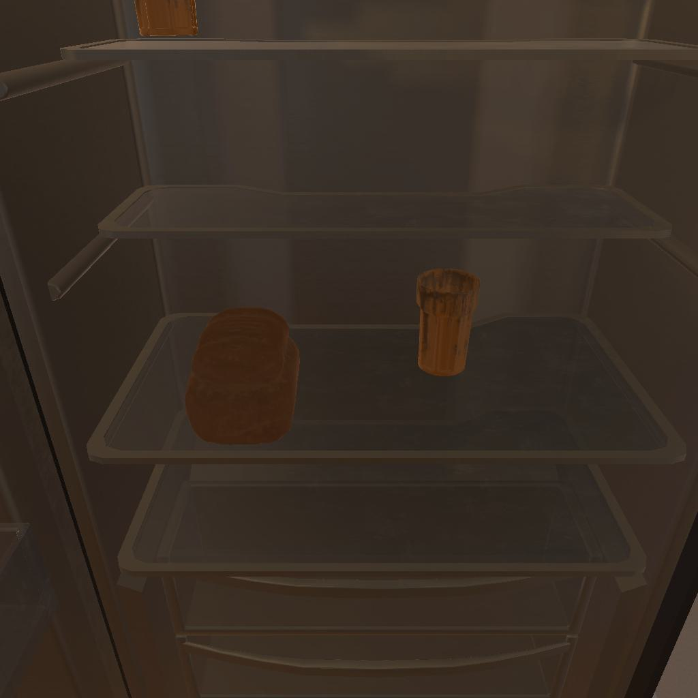

---------------------------------------------------------task: 13---------------------------------------------------------
--------------------------------------------------------------------------------------------------------------------------------------------------------------------
--------------------------------------------------------------------------------------------------------------------------------------------------------------------
Step:--------------------------------------------------------------------------13-------------------------------------------------------------------------------
----------------------------------------
VLM Prompt:
Image1:
Image2:
Image3:
**Instruction**
1. Analyze the provided images to identify all visible household objects and compare the difference between images (e.h. whether the object is opened or not and taken on hand or not), focusing on those relevant to the task description "put a clean tomato in garbagecan."
2. Use the analysis of images and the task hint "The agent must find an object of the desired type, pick it up, go to a sink or a basin, clean the object with a sink or basin, and then find the correct location to place it and put it down there. The agent does not need to use soap bottle or faucet to clean the object, and the agent just needs to do action that is "clean the object with the sink or sink basin"." to answer the question: what is the most reasonable action in the choices for the task description "put a clean tomato in garbagecan"?
3. Decide and write the answer using the template: The answer is: (i): , where i is the real number. If there is no desired object in images, search every place based on **Initial Observation** to find the object. And if no one is exactly correct, choose a similar answer.
**Initial Observation**
You are in the middle of a room. Looking quickly around you, you can see countertop (1-2), cabinet (1-11), garbagecan (1), toaster (1), sinkbasin (1), fridge (1), sink (1), microwave (1), drawer (1-3), stoveburner (1-4), coffeemachine (1), diningtable (1)
**Answer Choices**
(1): go to countertop 1
(2): go to cabinet 2
(3): go to cabinet 3
(4): go to garbagecan 1
(5): go to cabinet 4
(6): go to toaster 1
(7): go to sinkbasin 1
(8): go to sink 1
(9): go to cabinet 5
(10): go to microwave 1
(11): go to countertop 2
(12): go to cabinet 6
(13): go to cabinet 7
(14): go to drawer 1
(15): go to stoveburner 1
(16): go to stoveburner 2
(17): go to cabinet 8
(18): go to drawer 2
(19): go to stoveburner 3
(20): go to stoveburner 4
(21): go to coffeemachine 1
(22): go to cabinet 9
(23): go to cabinet 10
(24): go to cabinet 11
(25): go to diningtable 1
(26): go to drawer 3
(27): open cabinet 1
(28): close cabinet 1
(29): examine cabinet 1
**Answer**
Let's think step by step by following the instructions.
----------------------------------------
----------------------------------------
Original Response:
Firstly, we need to find a tomato to complete the task of "put a clean tomato in garbagecan." From the initial observation, we know that there's a fridge in the room, which is a common place to store tomatoes. However, examining the images provided, we do not see a tomato in the open fridge (Image1 and Image2) or on the countertop with the sink and toaster (Image3).
Since the tomato is not visible in the provided images, we need to search every place based on the initial observation to find the object. The most logical place to start would be the places where food items are usually stored or kept, such as cabinets, drawers, or the fridge.
The fridge has already been shown in the images, and there's no tomato there. The next reasonable place to search would be the cabinets or drawers, as these are common storage places for food items that do not require refrigeration.
Given the answer choices, the most reasonable action would be to start checking the cabinets one by one to find the tomato. Therefore, the answer is:
The answer is: (1): go to cabinet 1
If the tomato is found there, the next steps would follow the task hint to pick it up, clean it in the sink or sink basin, and then put it in the garbagecan. If cabinet 1 does not contain the tomato, we would continue to search the other cabinets and drawers in numerical order until the tomato is found.
----------------------------------------
----------------------------------------
>>> Refine Original VLM Response and Get Pure Action: go to cabinet 1
If the tomato is found there, the next steps would follow the task hint to pick it up, clean it in the sink or sink basin, and then put it in the garbagecan
----------------------------------------
-----------------------------------------------------------------
Running time: 16.925649881362915 seconds
Total Money: 7.410890000000006
-----------------------------------------------------------------
-----------------------------------------------------------------
Text Observation:Nothing happens.
-----------------------------------------------------------------
UNSUCCEED